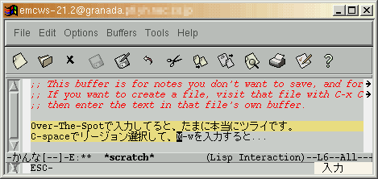
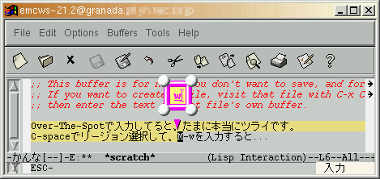
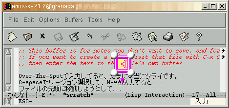

Emacs21ではXIMをサポートするようになりましたが、Emacsのコマンド入力形態がXIMの機構と相性が悪いという点ではXEmacsと変わりません。
例えば、図1のようにリージョンを選択してコピーする場合を考えます。日本語入力がオンの状態でC-spaceでリージョンの選択を開始したとします†。カーソルを目的の場所に移動してM-wを入力すると、ESCはEmacsに渡りますが、wは図2のように前編集文字列としてXIMサーバ側に渡ります。


M-w（ESCの次にw）を入力した状態
そのほか、M-<の入力でも図3のような状態になってしまいます。

M-<（ESCの次に<）を入力した状態
このように基本的なコマンドを入力する度に日本語入力を一旦オフにしなければならないわけですから、XIMの利用が普及しないのも当たり前かもしれません。もちろん、M-wを「ESCの次にw」ではなく、「Altを押しながらw」で入力すれば、このようなことは起きないかも知れません††。では、C-x bなどの複数ストロークのコマンドはどうすればいいのでしょうか。
ユーザが複数ストロークのコマンドを入力している途中かどうかを、Emacsは知っています。コマンドの入力が途中のときは日本語入力をオフに（状態を保存）して、コマンドの入力が完了したら日本語入力をオンにする（状態を元に戻す）ようにXIMを制御すれば、前述の問題は解決するはずです。例えば、ESCやC-xが押されたら日本語入力をオフにして、コマンドの入力完了かC-gの入力で日本語入力をオンにするわけです。なぜ、こんな簡単なことが実装されていないのでしょうか‡。
次のパッチに修正の例を示します（FreeBSD上のEmacs 21.2で動作を確認しました）。なお、XEmacs 21.1についてはこちらを参照してください‡‡。
*** src/xterm.c Sat Mar 16 19:34:56 2002
--- src.new/xterm.c Fri Dec 20 16:21:30 2002
***************
*** 9954,9959 ****
--- 9954,9962 ----
XNextEvent (dpyinfo->display, &event);
#ifdef HAVE_X_I18N
+ #if 1
+ if (this_command_key_count == 0)
+ #endif
{
/* Filter events for the current X input method.
XFilterEvent returns non-zero if the input method has
なお、この修正方法はかなり強引な方法です。たった1行を追加しただけで簡単そうにみえますが、本当にちゃんと直すにはもっといろいろな苦労が必要になりそうです。
‡‡ Emacsのソースを読んでからXEmacsのソースを読むと、非常に読みづらいです。
XIMの仕様では、XIMクライアント（Emacsなど）が自発的に日本語入力のオン・オフを制御するにはXSetICValues()を使用することになっています。例として、日本語入力をオンにするコードを次に示します。
XVaNestedList list;
list = XVaCreateNestedList(0, XNPreeditState, XIMPreeditEnable, NULL);
if (XSetICValues(ic, XNPreeditAttributes, list, NULL) != NULL)
warnx("XSetICValues() failed. (XNPreeditState not supported.)");
XFree(list);
XNPreeditStateというXIC属性はR6から定義されましたが、多くのXIMサーバはこれをサポートしていません。例えば、Kinput2はv3.1（2002年10月）からサポートするようになったばかりです。
XIMサーバがどのXIC属性をサポートしているのかを、XIMクライアントはXGetIMValuesで調べることができます。コードの例を次に示します。
XIMValuesList *vl;
int k;
if (XGetIMValues(im, XNQueryICValuesList, &vl, NULL) != NULL) {
warnx("XGetIMValues() failed. (XNQueryICValuesList not supported.)");
return;
}
for (k = 0; k < vl->count_values; ++k)
printf("supported_values[%d]: %s\n", k, vl->supported_values[k]);
XFree(vl);
ところが、R6.6（とそれ以前のリリース）の実装にはバグがあり、このコードを実行するとコアダンプします（不定のアドレスをfree()で解放してしまうバグなので、そのときコアダンプしなくても、いずれはクラッシュします）。XFree86では4.2.0から修正されているようです（ただし、メモリリークするバグが残っています）。
したがって、現状ではそれぞれのXIC属性に対してXGetICValues()またはXSetICValues()を使用して、NULLが返ってくればサポートされている、返ってこなければサポートされていないと判断するしかなさそうです。